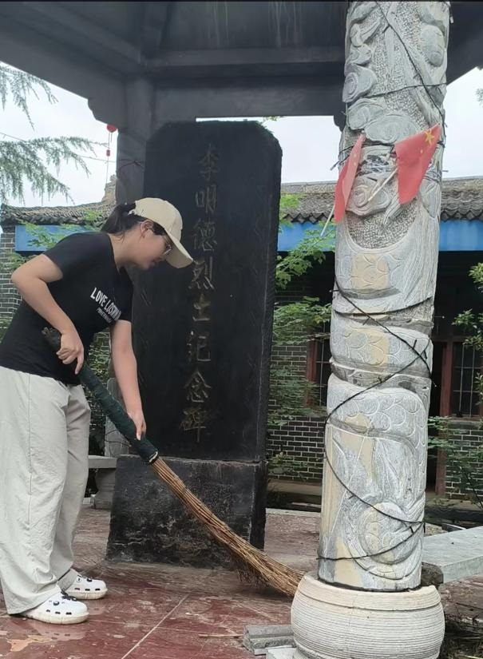
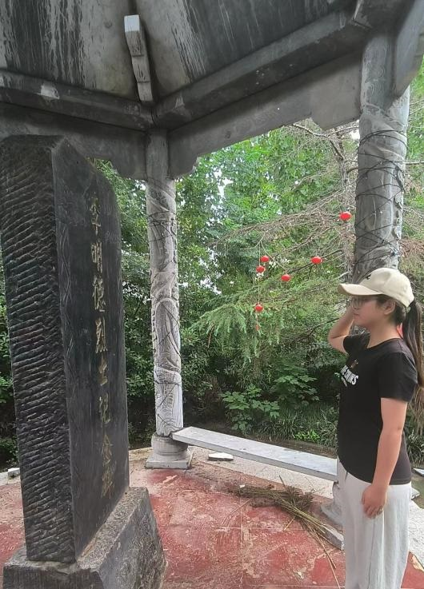
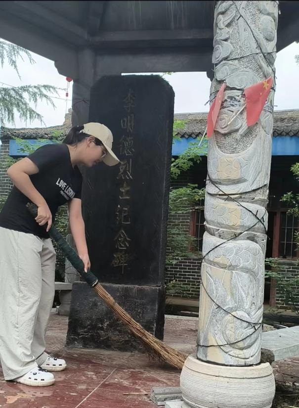
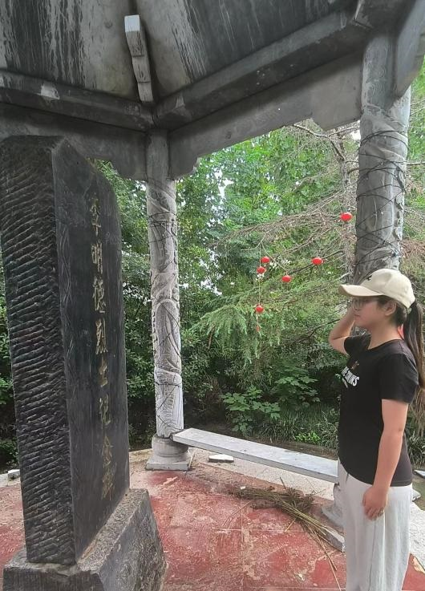
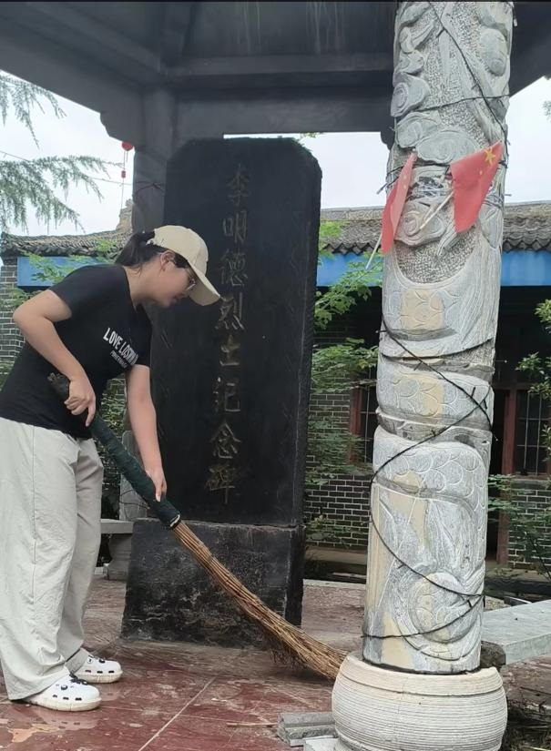
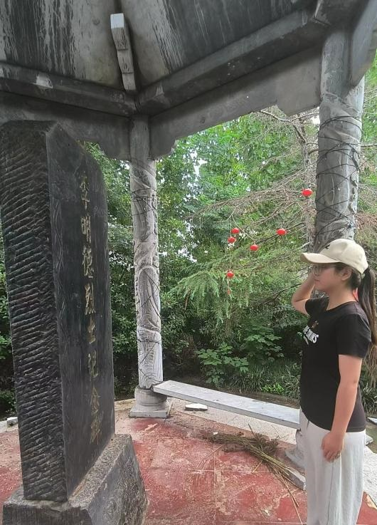

实践地点：李明德烈士纪念碑
团队成员李佳彤的实践自述：2024 年 7 月 28 日，怀着崇敬与沉重，我来到李明德烈士纪念碑处。看到门前荒凉，心生痛惜与责任。我清扫枯叶，充满敬畏，深知未忘烈士牺牲奉献。在这片土地上，我们缅怀过去、汲取力量。革命精神凝聚人心，激励我们奋进。重走红色足迹是传承之道，我在此体会到烈士的伟大精神。 微博网址
考察实践：

 



团队成员李佳彤的实践自述：2024 年 7 月 28 日，怀着崇敬与沉重，我来到李明德烈士纪念碑处。看到门前荒凉，心生痛惜与责任。我清扫枯叶，充满敬畏，深知未忘烈士牺牲奉献。在这片土地上，我们缅怀过去、汲取力量。革命精神凝聚人心，激励我们奋进。重走红色足迹是传承之道，我在此体会到烈士的伟大精神。 微博网址

